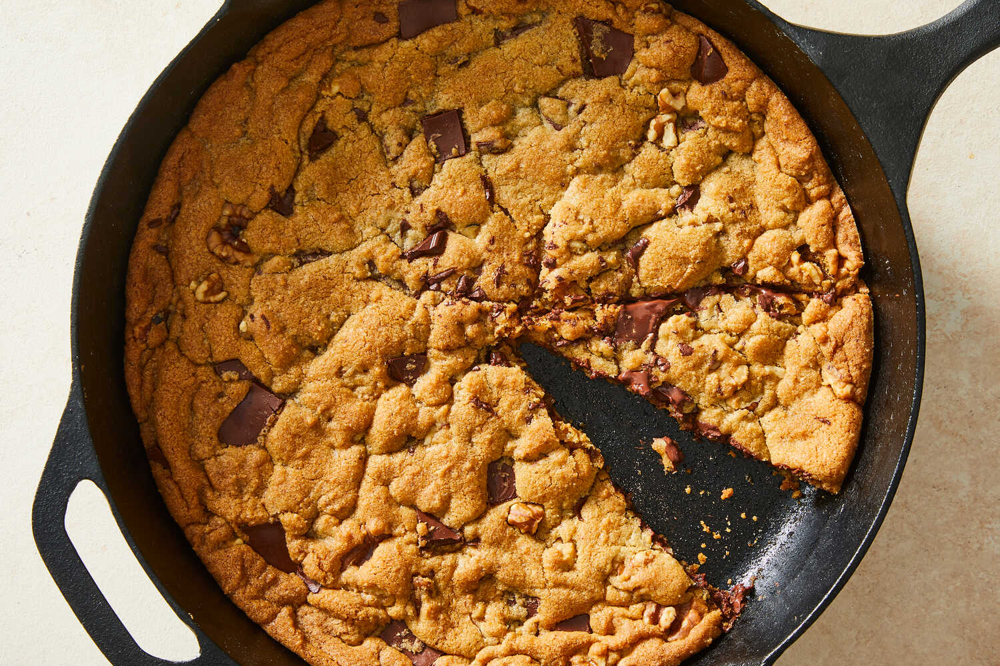

Skillet Chocolate Chip Cookie
 8
servings
8
servings 45
minutes
45
minutes Source
Source Meat
Meat
Skillet cookies are perfect for lazy nights when everyone wants something sweet, but no one wants to work that hard for it.

8 tbsp (113g)grams unsalted butter, at room temperature½ cup (110g)packed dark brown sugar½ cup (100g)granulated sugar1large egg1 tbspvanilla extract1½ cups (192g)all-purpose flour¾ tspbaking soda¾ tspsalt1 cup (140g)chopped semi-sweet chocolate1 cup (96g)whole walnut halves or walnut pieces- flaky sea salt, for serving (optional)
Heat the oven to 350 degrees. In a large bowl, with a wooden spoon or an electric mixer on medium, combine the butter, brown sugar and granulated sugar and beat until smooth and creamy, about 1 minute. Add the egg and vanilla and beat to combine.
Add the flour, baking soda and salt to the butter mixture and mix until just combined. Mix in the chocolate and the walnut halves.
Spread the batter evenly in a 12-inch oven-safe skillet. It will be thin. Bake until golden brown and set but still slightly gooey in the center, about 22 minutes. Let stand for at least 5 minutes before serving warm or at room temperature. The cookie is best the day it’s made, but leftovers will last, well-wrapped, up to 3 days at room temperature.
Sprinkle with flaky sea salt if using before serving. Goes wonderfully with a scoop of vanilla ice cream.